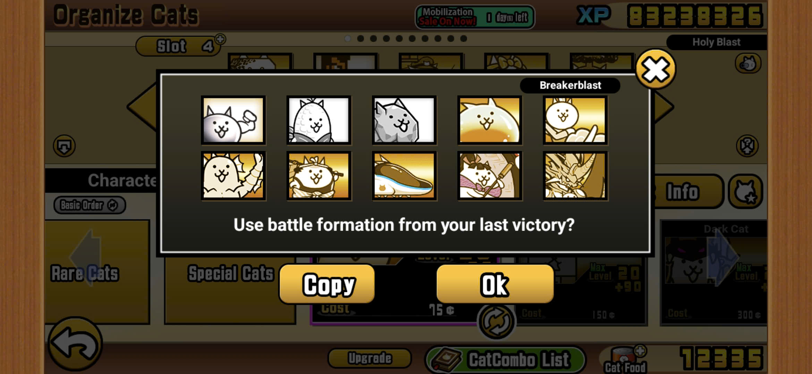

Revival of Origin

The playstyle of this stage somewhat resembles the Floor 30 .
You can have any ubers on your side, but you play along with the boss's rule. His attack can one hit most of your normal attackers, and when combined with cancerous peons, the only way to beat the stage is to attack Luza while he is not attacking. Timing skill is required to hit luza here.
In this stage, I also learned to calculate the damage of each unit for the first time. For example, in my lineup, I had to upgrade Kozuchimaru to level 40 in order to one-shot the mini bore.